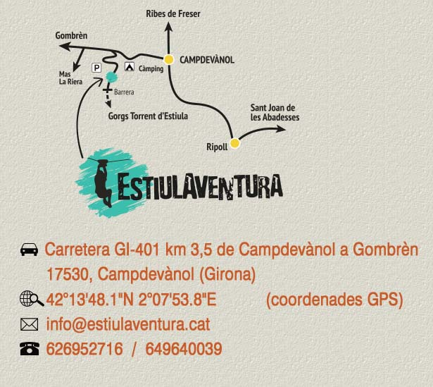

ESTIULAVENTURA es troba en la preciosa vall de Sant Llorenç del terme municipal de Campdevànol en ben mig dels Pre-Pirineus orientals i arribar és molt senzill:
L'itinerari més usat és passar per RIPOLL i agafar la N-260 en direcció Campdevànol / Puigcerdà, a 3 km arribarem a CAMPDEVÀNOL i haurem de girar a l'esquerre i agafar la carretera GI-401 en direcció Gombrèn/ La Pobla de Lillet. Passat el càmping Pirinenc (Km 3) trobarem un trencant a l'esquerre que l'haurem d'agafar (TORRENT DE LA CABANA), a 100 m (segona curva) es troba el nostre pàrquing.
